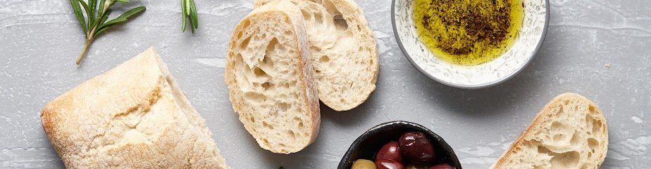

PIATTI TIPICI DELLA CUCINA TOSCANA
Ecco una lista delle prelibatezze di questa terra
- Bistecca alla FIorentina
- Ribollita
- Pappa al Pomodoro
- Panzanella
- Cacciucco
- Dolci
- Panforte
- Torta al semolino
- Schiacciata alla fiorentina
- Trippa alla fiorentina
ti è venuta fame?Leggi le recensioni dei ristoranti e prenota un tavolo!Clicca sul logo